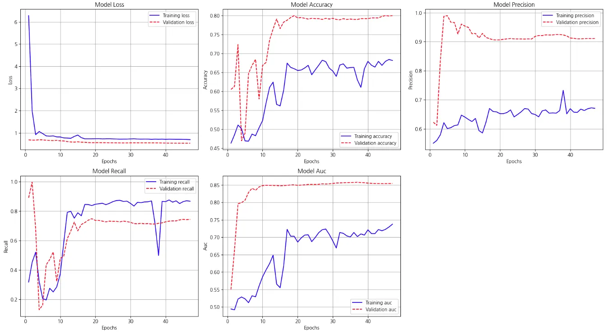
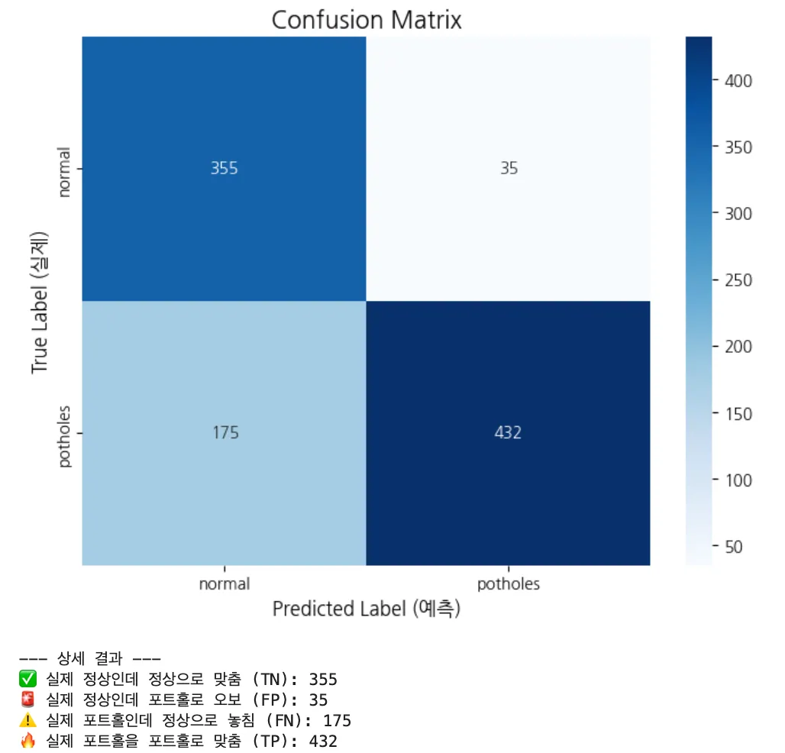
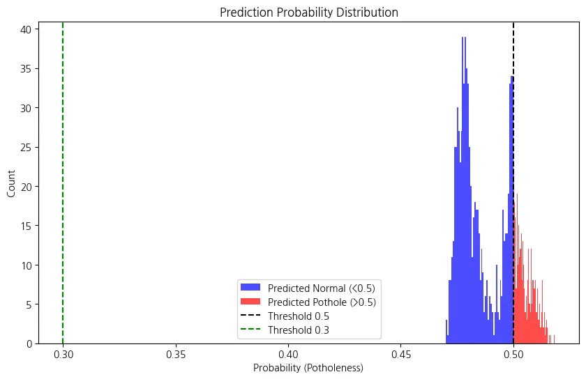

준수한 분류 성능
AUC 약 0.85로 정상과 포트홀을 구분하는 종합 능력은 양호합니다.
Part 4 · Reading Results
정확도 하나만 보지 않습니다. 오답률, 변별력, 신중함, 놓치지 않는 능력을 함께 읽어 포트홀 탐지 모델의 실제 행동을 해석합니다.
Metric 01 / 05 · S172–173
학습이 진행될수록 매끄럽게 내려가야 하는 값입니다.

Metric 02 / 05 · S174
전체 예측 중 맞힌 비율이지만, 데이터 불균형이 있다면 중요도가 낮아질 수 있습니다.

원본 문장의 loss 표기를 보존했습니다. 이 beat에서는 각각 Training accuracy와 Validation accuracy를 가리킵니다.
Metric 03 / 05 · S175
모델이 “정상”과 “포트홀”을 얼마나 명확하게 구분해낼 수 있는지에 대한 종합 점수입니다.

원본 문장의 loss 표기를 보존했습니다. 이 beat에서는 각각 Training AUC와 Validation AUC를 가리킵니다.
Metric 04 / 05 · S176
모델이 “포트홀이다!”라고 외친 것 중 실제 포트홀인 비율입니다.

원본 문장의 Validation loss 표기를 보존했습니다. 이 beat에서는 Validation precision을 가리킵니다.
Metric 05 / 05 · S177
실제 포트홀들을 모델이 놓치지 않고 찾아낸 비율입니다. 도로 안전 측면에서는 가장 중요합니다.

Overall · S178
다섯 그래프를 종합하면 변별력은 준수하지만 훈련 성능 자체가 낮습니다. 모델이 데이터의 특징을 충분히 다 배우지 못한 과소적합 상태일 가능성이 있습니다.
AUC 약 0.85로 정상과 포트홀을 구분하는 종합 능력은 양호합니다.
훈련 지표가 충분히 높지 않아 모델 용량이나 학습 조건을 더 살펴봐야 합니다.
Threshold · S179
포트홀 확률이 0.5보다 크면 포트홀, 그렇지 않으면 정상으로 분류합니다.

실제 정상을 정상으로 맞춤
실제 정상을 포트홀로 오보
실제 포트홀을 정상으로 놓침
실제 포트홀을 포트홀로 맞춤
Probability · S180–181
파란색은 0.5 이하의 정상 예측, 빨간색은 0.5를 넘은 포트홀 예측입니다. 두 분포가 경계 가까이에 모여 있어 임계값을 바꾸면 판정 결과도 크게 달라질 수 있습니다.

Quick Check
답을 고르면 바로 해설이 나타납니다.
답을 고르면 바로 해설이 나타납니다.